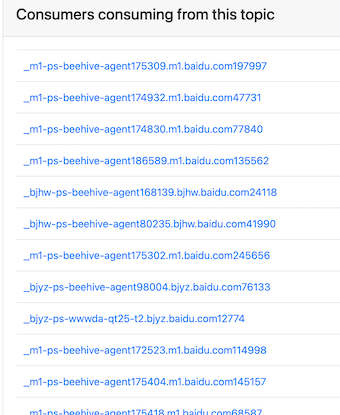
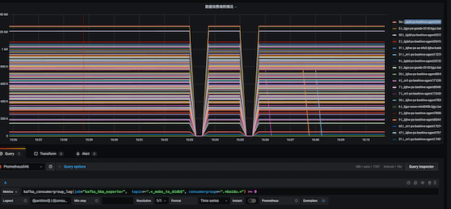
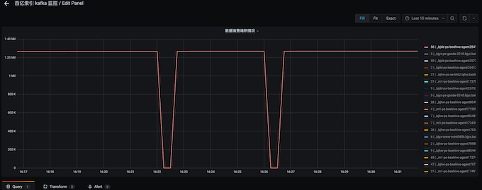
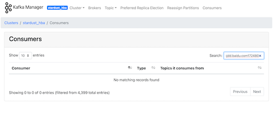

需要有些关于 __consumer_offsets 作用的小知识
背景及问题
某个 kafka 集群中，消费者在消费数据时，使用的是框架自动生成的 consumergroup ，也即一个 consumer 新建一个 consumergroup ，样例如下：

在配置完 kafka_exporter 和 prometheus 采集任务后，在 grafana 上配置表达式，但是发现结果不符合预期，一些 consumergroup 的 lag 异常，从表象上看，感觉是因为实例迁移/重启而产生的废弃的旧 consumergroup。

问题排查
从 kafka manager 上看，这些异常的 consumergroup 都是不存在的。以 _bjdd-ps-beehive-agent254112.bjdd.baidu.com172480为例：
监控
从监控上看，这个 tag 是异常的：

kafka-manager
从 kafka-manager 上看，没有这个 consumergroup 信息：

kafka cli
通过 kafka 自带的 cli 工具查询 consumergroup 的信息，其中是有这个 consumergroup 的：

kafka golang client
kafka_exporter 使用 golang 实现。这里使用 kafka golang client 编码以模拟 kafka_exporter 的执行方式。在结果中，也是有这个 consumergroup ：

结论
kafka-manager 获取 consumergroup 的方式肯定和 kafka cli 和 kafka golang client 的方式不同，前者的方式更为精确。
解决步骤
kafka-manager consumergroup 信息采集流程分析
代码库为：https://github.com/yahoo/CMAK/tree/2.0.0.2 。整体通过 Scala 实现，由于对 Scala 的语法完全不了解，所以只能连蒙带猜地看。
首先，这是一个 http web 服务，那么先找处理 http 的代码，按照 Java 项目的规范，猜测在 controller 目录下： https://github1s.com/yahoo/CMAK/blob/2.0.0.2/app/controllers/Consumer.scala#L1-L40。看代码的意思，主要是调用了 kafkaManager来获取 consumergroup 的信息。

找到方法 getConsumerListExtended实现的地方，https://github1s.com/yahoo/CMAK/blob/2.0.0.2/app/kafka/manager/KafkaManager.scala#L640-L656，前面的 tryWithKafkaManagerActor感觉像是对执行逻辑的封装，和业务逻辑无关，那么和业务逻辑相关的函数感觉是在 KSGetConsumers中

全局搜索 KSGetConsumers的实现，如下 https://github1s.com/yahoo/CMAK/blob/2.0.0.2/app/kafka/manager/actor/cluster/KafkaStateActor.scala#L1266-L1269 ，发现是调用了一个 cache

相关的 cache 类找了一圈，感觉 KafkaManagedOffsetCache比较可疑，https://github1s.com/yahoo/CMAK/blob/2.0.0.2/app/kafka/manager/actor/cluster/KafkaStateActor.scala#L178-L197 ，看到类定义中的 val ConsumerOffsetTopic = "__consumer_offsets"，突然想起一件事情。kafka 中 consumergroup 的信息是存放在 topic __consumer_offsets 中的，那么我直接将代码改造成消费这个 topic 的数据来统计有效的 consumergroup 信息不就行了吗？看这个类的实现，也确实是消费这个 topic 中的数据，解析出 consumergroup 的信息然后存到内存中 https://github1s.com/yahoo/CMAK/blob/2.0.0.2/app/kafka/manager/actor/cluster/KafkaStateActor.scala#L322-L373


__consumer_offsets 数据结构
这个 topic 中每条数据的内容如下所示
Kafka 的 __consumer_offsets 主题存储了消费者组的偏移量信息，其中的消息格式主要包含以下几种：
偏移量提交记录格式
Key:
version: 版本号
group.id: 消费者组ID
topic: 主题名称
partition: 分区号
Value:
offset: 偏移量
metadata: 元数据（通常为空字符串）
commit_timestamp: 提交时间戳
expire_timestamp: 过期时间戳
消费者组元数据格式
Key:
version: 版本号
group.id: 消费者组ID
Value:
protocol_type: 协议类型
generation_id: 代数
protocol: 分区分配协议
leader: leader成员ID
members: 成员列表信息
消费者组过期格式（墓碑消息）
Key: 与上述格式相同
Value: null（表示删除）
解析 Key 的代码
核心对于 Key 的解析代码如下（由 claude 生成）：
1 | package consumergroup |
整体实现思路
整体的实现思路是，从头开始消费 __consumer_offsets 中的数据，如果数据写入的时间和当前时间比大于一个阈值，则忽略。将有效的 consumergroup 维护在内存的一个 map 中，如果后续有新增的 Key 则向 map 中补充，如果读到的 Value 为空，则代表这个 consumergroup 失效了，就会从 map 中移除，并且提供 http 接口支持人工删除 consumergroup。
对于 exporter 程序，使用 kafka golang client 拉取全量 consumergroup 列表，用这个 map 把无效的 consumergroup 滤去后，再进一步获取相关监控数据。在过滤的同时，会检查 map 中的数据和当前的时间比是否大于一个阈值，如果是，则会将 map 中的 key 删除。改造完后看监控指标就正常了许多。

唯一的问题是，如果一个实例在消费时卡住了，不再向 __consumer_group 提交 offset 信息，那么这个实例消费的监控数据就会丢失。这个问题后面遇到再想想怎么解决吧。
回到之前的问题，使用 kafka cli 和 kafka golang client 拉取全量 consumergroup 时包含很多无用 consumergroup 的原因，猜测可能是这部分 consumergroup 在 __consumer_offsets中虽然很久都没有新的 offset 更新，但是却一直都未过期（变成墓碑消息），所以才会被获取到。在 kafka manager 中可能也有对于 consumergroup 的过滤策略，没细研究代码，不确定（Scala 实在看不懂）。